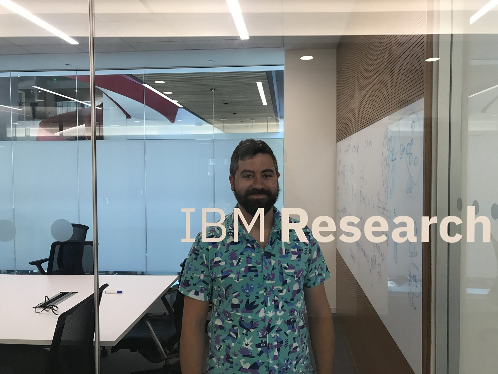
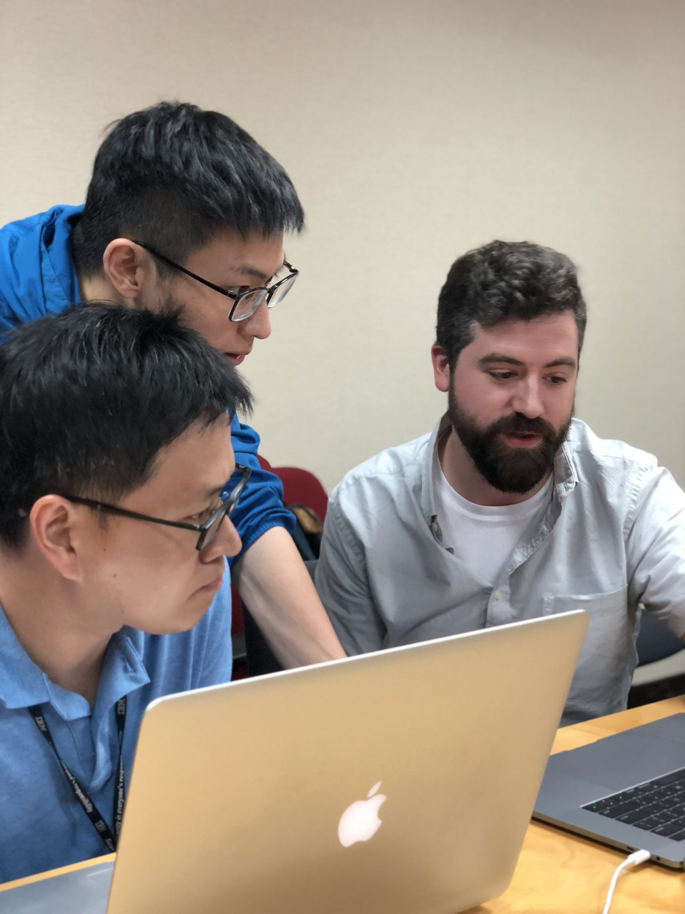

Always a pleasure to work with, Michael was a great colleague at Constant Contact. His excitement and passion for the UX practice was palpable within our team. I witnessed him grow and excel within the User Research practice, but he also became a great contributor within the design and strategy space, always there with new ideas and possibilities.
Product / UX Designer · 14+ years · IBM Security background
I design the interfaces experts actually trust.
Product and UX design shaped by research: leading design for IBM's first large-vendor incident response platform to a “Leader” ranking from IDC and Forrester, then carrying that same research-informed process into every product since.


About
I'm a Product & UX Designer with 14 years across enterprise software, information-dense platforms, and cross-functional design partnership. My titles have included UX Designer / Researcher, Principal UX Researcher, and UX Research Operations specialist, but the throughline has stayed the same: turning ambiguous problems into interfaces people can actually use under pressure.
At IBM, I led design for Resilient's Artifacts feature (see the case study below), moving from early concepts through validated UI for a demanding security analyst audience. In my process, research keeps design decisions honest, tested against how people actually work, not just how a flow looks in Figma.
Outside the day job, I run Rip Studios, a design agency, keeping me hands-on in visual and interaction design outside the enterprise context.
- BA, Visual and Media Arts — Emerson College
- MS, Human Factors in Information Design — Bentley University
- NN/g UX Management Certification
- Design Thinking Facilitation Training
Why this role
Enterprise product design at IBM
Led UX design for Resilient, IBM's first large-vendor incident response platform, earning the product a “Leader” ranking from IDC and Forrester.
Design decisions backed by evidence
Every concept in the case study below moved through contextual inquiry and user validation before it shipped, so design choices held up under real analyst workflows.
Cross-functional design partnership
Built a Design Partner Program at SimSpace and led design thinking workshops at RCG Global Services, working directly alongside product and engineering to move concepts into build.
Hands-on practice outside the day job
I run Rip Studios, a design agency, keeping visual and interaction design skills sharp outside the enterprise research context.
Experience
A field log, roughly in order.
-
Research ConsultingFeb 2026 – May 2026
UX Research Lead
- Owned the research strategy for a new paper billing process at a Florida utility company: screener design, a mixed-methods study plan, an AI capture process, and reporting format, tracing what was driving billing-related call volume and escalations.
- Built a structured, AI-queryable research repository indexing 50 interviews in NotebookLM, letting the client keep extracting insight after the engagement ended.
- Delivered findings across virtual and in-person sessions with customers frustrated by billing errors, reducing bill-comprehension call times and increasing first-bill customer confidence despite a low-trust starting point.
-
 SimSpaceMay 2024 – Dec 2025
SimSpaceMay 2024 – Dec 2025Senior UX Researcher II
- Built a new UX research practice for four product teams on a cyber range platform: a repository, personas, and standardized protocols that became their shared operating infrastructure.
- Ran ongoing customer feedback programs, including a Design Partner Program and the 2024 Customer Advisory Board, to shape and prioritize the roadmap.
- Developed AI-enabled synthesis protocols with Claude, NotebookLM, and GPT to speed up turning interview and testing data into findings.
- Validated a major milestone release through iterative testing to retain the company's top contracted DOD customer.
-
 RCG Global ServicesOct 2023 – May 2024
RCG Global ServicesOct 2023 – May 2024Lead UX Researcher
- Led discovery research and multi-day design thinking workshops across five user groups for a USAID-funded financial reporting platform, where reporting accuracy tied directly to congressional funding.
- Reframed findings as “how might we” statements that directly shaped a platform redesign, eliminating the pain points surfaced.
- Built a formal intake, synthesis, and decision-making process, plus reusable artifacts the design team kept using after the engagement ended.
-
Nielsen Norman Group & Eager LabsJan 2023 – Oct 2023
Leadership & Management Development
- Completed a UX Certificate with specialty recognition in UX Management, concentrating on leadership, workshop facilitation, research operations, design systems, and product/UX partnership.
- Completed Eager Labs' invite-only Emerging Leaders program on executive referral: five sessions, a 360 feedback assessment, and ongoing 1:1 coaching.
-
 SecurityScorecardOct 2021 – Jan 2023
SecurityScorecardOct 2021 – Jan 2023Senior UX Researcher
- Drove a 5–15% improvement in customer retention and conversion through end-to-end onboarding, pricing, and plan research with Growth product teams.
- Defined user archetypes for multi-jurisdictional security monitoring through Jobs-to-be-Done research, informing a new public-sector monitoring tool the company shipped.
-
 VeracodeMar 2020 – Oct 2021
VeracodeMar 2020 – Oct 2021Principal UX Researcher
- Formalized Veracode's first UX Research practice from the ground up: protocols, discovery frameworks, and design thinking capabilities.
- Co-created a Developer Partner Program feeding discovery, concept, and usability testing, growing the participant base to scale research.
- Delivered 14 strategic research initiatives using a Jobs-to-be-Done framework to drive product vision, while mentoring researchers in methodology.
-
 IBM Resilient & IBM SecurityNov 2017 – Mar 2020
IBM Resilient & IBM SecurityNov 2017 – Mar 2020UX Designer / Researcher
- Led UX design and research for Resilient, IBM's first large-vendor incident response platform, earning IBM “Leader” recognition from IDC and Forrester.
- Ran participatory design research and rapid iterative testing, using Sketch and Figma prototypes plus a formalized GitHub-based research workflow.
- Became a certified design thinking facilitator, formalizing years of practice into IBM's official training.
- Designed a feature letting analysts cross-reference security incident artifacts directly, cutting incident resolution time roughly tenfold.
-
 Constant Contact & Endurance InternationalSep 2012 – Nov 2017
Constant Contact & Endurance InternationalSep 2012 – Nov 2017Senior UX Researcher / UX Researcher
- Pioneered an academically-grounded site-visit research program that shifted company culture toward centering the small business owner.
- Ran a company-wide customer panel discussion, surfacing themes that shaped empathy and roadmap direction.
- Executed 20+ studies annually using the widest methodology toolkit of my career, including card sorting, tree testing, and quantitative testing in R and SPSS.
- Maintained and evolved the research practice through the company's acquisition by Endurance International, co-creating a strategic journey map with a participatory field research team.
- Helped build a fixed in-person usability lab with a one-way mirror and multi-camera capture system for stakeholder observation.
Full role details and additional history on the resume.
Toolkit
Design & strategy
 Figma
Figma Miro
Miro Mural
Mural Sketch
Sketch
Research & testing
 UserTesting
UserTesting- UserZoom
 Userlytics
Userlytics User Interviews
User Interviews Maze
Maze Qualtrics
Qualtrics Optimal Workshop
Optimal Workshop
Synthesis & surveys
 SurveyMonkey
SurveyMonkey- SurveyGizmo
 dScout
dScout Ethnio
Ethnio ProvenByUsers
ProvenByUsers Respondent
Respondent Pendo
Pendo
AI-enabled synthesis
 Claude
Claude NotebookLM
NotebookLM Dovetail
Dovetail Great Question
Great Question
Selected work
The IBM case study is the clearest look at the design work itself; the other two show the research practice behind good design decisions.
IBM Security / Resilient
From Discovery to Design: Artifacts & Related Incidents
Redesigning how security analysts work with incident data, from contextual inquiry through several rounds of iterative design.
Constant Contact → Endurance International
Building a Research Practice from Zero
Standing up foundational persona research where none existed, then scaling that same practice into a company-wide customer journey map.
Research Consulting
Scaling the Unscalable: AI-Augmented Qualitative Research
Validating a redesigned utility bill format across 50+ interviews by designing research methodology around AI-assisted synthesis.
What people say
Michael was a key reason that our UX team delivered better features and a better user experience for our customers. He leveraged his deep expertise to design research campaigns that delivered insightful and actionable results. We kept knowing our customers better and better because of Michael.
Michael is a passionate and incredibly talented user experience professional, that possesses an uncommon level of creativity and an advanced understanding of UX methods and strategy. He is highly empathetic to the needs and expectations of users; advocating for the creation of extraordinary user experiences.